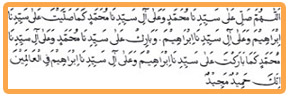

Khasiat fadhilah dan manfaat Sholawat Ibrahimiyah
Sholawat ini terdapat dalam bacaan tasyahud akhir shalat
Imam Nawawi berkata: Bahwa Sholawat ini dinamakan sholawat Ibrahimiyah karena sholawat tersebut merupakan bentuk sholawat yang paling utama, banyak menimbulkan pengaruh yang besar sekali apabila dibaca tiap-tiap harisecara istiqomah, terutama, bagi yang mempunyai keinginan besar untuk menunaikan ibadah haji, maka perbanyaklah membaca sholawat ini secara istiqomah, karena sholawat ini diajarkan oleh Rasuluuah saw. Adapun kalimatnya yaitu :

ALLAHUMMA SHALLI ‘ALAA SAYYIDINAA MUHAMMAD WA’ALAA AALI SAYYIDINAA MUHAMMADIN KAMAA SHALLAITA ‘ALAA SAYYIDINAA IBRAAHIIMA WA’ALAA AALI SAYYIDINAA IBRAHIIA WABAARIK ‘ALAA AALI SAYYIDINAA MUHAMMADIN KAMAA BAARAKTA ‘ALAA SAYYIDINAA ’ALAA SAYYIDINAA IBRAAHIMA WA ‘ALAA AALI SAYYIDINA IBRAAHIMA, FIL ‘AALAMIINA INNAKA HAMIIDUN MAJIIDUN.
Artinya
Ya Allah , berilah kasih saying kepada junjungan kita nabi Muhammad dan keluarganya sebagaimana Engkau memberi kasih sayangmMu kepada junjungan kita Nabi Ibrahim dan keluarganya. Dan berkatilah kepada junjungan kita nabi Muhammad dan keluarganya sebagaimana Engkau memberkati junjungan kita nabi Ibrahim dan kelurganya diantara makhluk makhlukmu, sesungguhnya Engkau Maha Terpuji dan Maha Mulia.
Wallahu A’lam